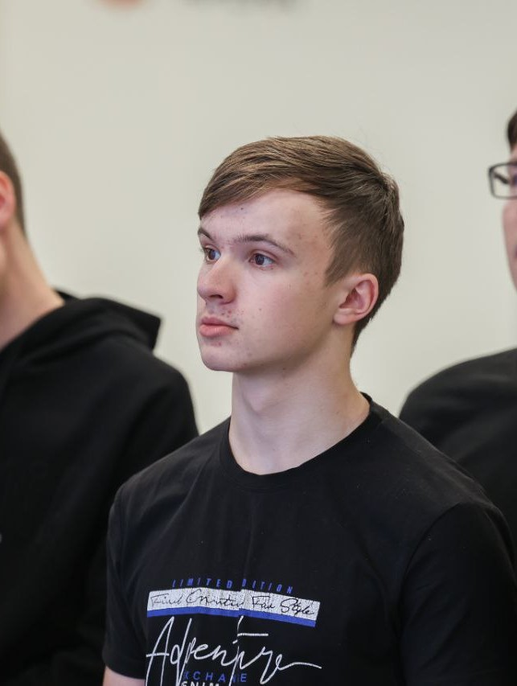

|  | ФИО: Койков Антон Иванович Дата рождения: 8 сентября, 2005 год Адрес проживания: г.Киров Гражданство: Российская Федерация Семейное положение: Холост Образование: Среднеее общее (11 классов) |
|---|---|
| Личностные качества | Отзывчивость, коммуникабельность, доброженательность, самостоятельность, сдержанность, изобретательность, бережливость. |
| О себе | Ценю благосклонное отношение ко мне и стараюсь отвечать тем же, ценю в людях доброту честность и открытость, люблю разбираться в строении различных механизмов. |
| Знание языков | Русский(C2) Английский(A2) |
| Компьютерные навыки | Знание языков программирования, умение пользоваться программным обеспечением MS Office, навыки сборки компьютера из его комплектующих, навыки управления и настройки компьютерных комплектующих. |